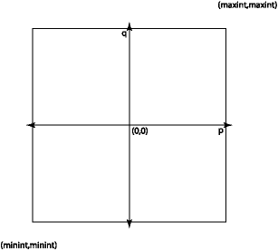

6.5. Black-box and Glass-box Testing¶
We would like to know that a program works on all possible inputs. The problem
with testing is that it is usually infeasible to try all the possible inputs.
For example, suppose that we are implementing a module that provides an abstract
data type for rational numbers. One of its operations might be an addition
function plus, e.g.:
module type RATIONAL = sig
(** A [t] is a rational. *)
type t
(** [create p q] is the rational number [p/q].
Raises: [Invalid_argument "0"] if [q] is 0. *)
val create : int -> int -> t
(** [plus r1 r2] is [r1 + r2] *)
val plus : t -> t -> t
end
module Rational : RATIONAL = struct
(** AF: [(p, q)] represents the rational number [p/q]
RI: [q] is not 0. *)
type t = int * int
let create p q =
if q = 0 then invalid_arg "0" else (p, q)
let plus (p1, q1) (p2, q2) =
(p1 * q2 + p2 * q1, q1 * q2)
end
module type RATIONAL =
sig type t val create : int -> int -> t val plus : t -> t -> t end
module Rational : RATIONAL
What would it take to exhaustively test just this one function? We’d want to try
all possible rationals as both the r1 and r2 arguments. A rational is formed
from two ints, and there are \(2^{63}\) ints on a modern OCaml implementation.
Therefore there are approximately \((2^{63})^4 = 2^{252}\) possible inputs to the
plus function. Even if we test one addition every nanosecond, it will take
about \(10^{59}\) years to finish testing this one function.
Clearly we can’t test software exhaustively. But that doesn’t mean we should give up on testing. It just means that we need to think carefully about what our test cases should be so that they are as effective as possible at convincing us that the code works.
Consider our create function, above. It takes in two integers p and q as
arguments. How should we go about selecting a relatively small number of test
cases that will convince us that the function works correctly on all possible
inputs? We can visualize the space of all possible inputs as a large square:

There are about \(2^{126}\) points in this square, so we can’t afford to test them all. And testing them all is going to mostly be a waste of time—most of the possible inputs provide nothing new. We need a way to find a set of points in this space to test that are interesting and will give a good sense of the behavior of the program across the whole space.
Input spaces generally comprise a number of subsets in which the behavior of the code is similar in some essential fashion across the entire subset. We don’t get any additional information by testing more than one input from each such subset.
If we test all the interesting regions of the input space, we have achieved good coverage. We want tests that in some useful sense cover the space of possible program inputs.
Two good ways of achieving coverage are black-box testing and glass-box testing. We discuss those, next.
6.5.1. Black-box Testing¶
In selecting our test cases for good coverage, we might want to consider both the specification and the implementation of the program or module being tested. It turns out that we can often do a pretty good job of picking test cases by just looking at the specification and ignoring the implementation. This is known as black-box testing. The idea is that we think of the code as a black box about which all we can see is its surface: its specification. We pick test cases by looking at how the specification implicitly introduces boundaries that divide the space of possible inputs into different regions.
When writing black-box test cases, we ask ourselves what set of test cases that will produce distinctive behavior as predicted by the specification. It is important to try out both typical inputs and inputs that are boundary cases aka corner cases or edge cases. A common error is to only test typical inputs, with the result that the program usually works but fails in less frequent situations. It’s also important to identify ways in which the specification creates classes of inputs that should elicit similar behavior from the function, and to test on those paths through the specification. Here are some examples.
Example 1.
Here are some ideas for how to test the create function:
Looking at the square above, we see that it has boundaries at
min_intandmax_int. We want to try to construct rationals at the corners and along the sides of the square, e.g.create min_int min_int,create max_int 2, etc.The line
p=0is important becausep/qis zero all along it. We should try(0, q)for various values ofq.We should try some typical
(p, q)pairs in all four quadrants of the space.We should try both
(p, q)pairs in whichqdivides evenly intop, and pairs in whichqdoes not divide intop.Pairs of the form
(1, q),(-1, q),(p, 1),(p, -1)for variouspandqalso may be interesting given the properties of rational numbers.
The specification also says that the code will check that q is not zero. We
should construct some test cases to ensure this checking is done as advertised.
Trying (1, 0), (max_int, 0), (min_int, 0), (-1, 0), (0, 0) to see that
they all raise the specified exception would probably be an adequate set of
black-box tests.
Example 2.
Consider a function list_max:
(** Return the maximum element in the list. *)
val list_max: int list -> int
What is a good set of black-box test cases? Here the input space is the set of all possible lists of ints. We need to try some typical inputs and also consider boundary cases. Based on this spec, boundary cases include the following:
A list containing one element. In fact, an empty list is probably the first boundary case we think of. Looking at the spec above, we realize that it doesn’t specify what happens in the case of an empty list. Thus, thinking about boundary cases is also useful in identifying errors in the specification.
A list containing two elements.
A list in which the maximum is the first element. Or the last element. Or somewhere in the middle of the list.
A list in which every element is equal.
A list in which the elements are arranged in ascending sorted order, and one in which they are arranged in descending sorted order.
A list in which the maximum element is
max_int, and a list in which the maximum element ismin_int.
Example 3.
Consider the function sqrt:
(** [sqrt x n] is the square root of [x] computed to an accuracy of [n]
significant digits.
Requires: [x >= 0] and [n >= 1]. *)
val sqrt : float -> int -> float
The precondition identifies two possibilities for x (either it is 0 or
greater) and two possibilities for n (either it is 1 or greater). That leads
to four “paths through the specification”, i.e., representative and boundary
cases for satisfying the precondition, which we should test:
xis 0 andnis 1xis greater than 0 andnis 1xis 0 andnis greater than 1xis greater than 0 andnis greater than 1.
6.5.2. Black-box Testing of Data Abstractions¶
So far we’ve been thinking about testing just one function at a time. But data abstractions usually have many operations, and we need to test how those operations interact with one another. It’s useful to distinguish consumer and producers of the data abstraction:
A consumer is an operation that takes a value of the data abstraction as input.
A producer is an operation that a value of the data abstraction.
For example, consider this set abstraction:
module type Set = sig
(** ['a t] is the type of a set whose elements have type ['a]. *)
type 'a t
(** [empty] is the empty set. *)
val empty : 'a t
(** [size s] is the number of elements in [s]. *
[size empty] is [0]. *)
val size : 'a t -> int
(** [add x s] is a set containing all the elements of
[s] as well as element [x]. *)
val add : 'a -> 'a t -> 'a t
(** [mem x s] is [true] iff [x] is an element of [s]. *)
val mem : 'a -> 'a t -> bool
end
module type Set =
sig
type 'a t
val empty : 'a t
val size : 'a t -> int
val add : 'a -> 'a t -> 'a t
val mem : 'a -> 'a t -> bool
end
The empty and add functions are producers; and the size, add and mem
functions are consumers.
When black-box testing a data abstraction, we should test how each consumer of
the data abstraction handles every path through each producer of it. In the
Set example, that means testing the following:
how
sizehandles theemptyset;how
sizehandles a set produced byadd, both whenaddleaves the set unchanged as well as when it increases the set;how
addhandles sets produced byemptyas well asadditself;how
memhandles sets produced byemptyas well asadd, including paths wherememis invoked on elements that have been added as well as elements that have not.
6.5.3. Glass-box Testing¶
Black-box testing is a good place to start when writing test cases, but ultimately it is not enough. In particular, it’s not possible to determine how much coverage of the implementation a black-box test suite actually achieves—we actually need to know the implementation source code. Testing based on that code is known as glass box or white box testing. Glass-box testing can improve on black-box by testing execution paths through the implementation code: the series of expressions that is conditionally evaluated based on if-expressions, match-expressions, and function applications. Test cases that collectively exercise all paths are said to be path-complete. At a minimum, path-completeness requires that for every line of code, and even for every expression in the program, there should be a test case that causes it to be executed. Any unexecuted code could contain a bug if has never been tested.
For true path completeness we must consider all possible execution paths from start to finish of each function, and try to exercise every distinct path. In general this is infeasible, because there are too many paths. A good approach is to think of the set of paths as the space that we are trying to explore, and to identify boundary cases within this space that are worth testing.
For example, consider the following implementation of a function that finds the maximum of its three arguments:
let max3 x y z =
if x > y then
if x > z then x else z
else
if y > z then y else z
val max3 : 'a -> 'a -> 'a -> 'a = <fun>
Black-box testing might lead us to invent many tests, but looking at the
implementation reveals that there are only four paths through the code—the
paths that return x, z, y, or z (again). We could test each of those
paths with representative inputs such as: max3 3 2 1, max3 3 2 4,
max3 1 2 1, max3 1 2 3.
When doing glass box testing, we should include test cases for each branch of each (nested) if expression, and each branch of each (nested) pattern match. If there are recursive functions, we should include test cases for the base cases as well as each recursive call. Also, we should include test cases to trigger each place where an exception might be raised.
Of course, path complete testing does not guarantee an absence of errors. We
still need to test against the specification, i.e., do black-box testing. For
example, here is a broken implementation of max3:
let max3 x y z = x
The test max 2 1 1 is path complete, but doesn’t reveal the error.
6.5.4. Glass-box Testing of Data Abstractions¶
Look at the abstraction function and representation invariant for hints about
what boundaries may exist in the space of values manipulated by a data
abstraction. The rep invariant is a particularly effective tool for constructing
useful test cases. Looking at the rep invariant of the Rational data
abstraction above, we see that it requires that q is non-zero. Therefore we
should construct test cases to see whether it’s possible to cause that invariant
to be violated.
6.5.5. Black-box vs. Glass-box¶
Black-box testing has some important advantages:
It doesn’t require that we see the code we are testing. Sometimes code will not be available in source code form, yet we can still construct useful test cases without it. The person writing the test cases does not need to understand the implementation.
The test cases do not depend on the implementation. They can be written in parallel with or before the implementation. Further, good black-box test cases do not need to be changed, even if the implementation is completely rewritten.
Constructing black-box test cases causes the programmer to think carefully about the specification and its implications. Many specification errors are caught this way.
The disadvantage of black box testing is that its coverage may not be as high as we’d like, because it has to work without the implementation.
6.5.6. Bisect¶
Glass-box testing can be aided by code-coverage tools that assess how much of the code has been exercised by a test suite. The bisect_ppx tool for OCaml can tell you which expressions in your program have been tested, and which have not. Here’s how it works:
You compile your code using Bisect_ppx (henceforth, just Bisect for short) as part of the compilation process. It instruments your code, mainly by inserting additional expressions to be evaluated.
You run your code. The instrumentation that Bisect inserted causes your program to do something in addition to whatever functionality you programmed yourself: the program will now record which expressions from the source code actually get executed at run time, and which do not. Also, the program will now produce an output file that contains that information.
You run a tool called
bisect-ppx-reporton that output file. It produces HTML showing you which parts of your code got executed, and which did not.
How does that help with computing coverage of a test suite? If you run your OUnit test suite, the test cases in it will cause the code in whatever functions they test to be executed. If you don’t have enough test cases, some code in your functions will never be executed. The report produced by Bisect will show you exactly what code that is. You can then design new glass-box test cases to cause that code to execute, add them to your OUnit suite, and create a new Bisect report to confirm that the code really did get executed.
Bisect Tutorial.
Download the file sorts.ml. You will find an implementation of insertion sort and merge sort.
Create a file in the same directory called myocamlbuild.ml. That file name is
actually mandatory, despite the customary use of “my” in CS demos to indicate a
name that you could choose yourself. Put this code in it:
open Ocamlbuild_plugin
let () = dispatch Bisect_ppx_plugin.dispatch
Create a _tags file in the same directory, and put the following in it:
<sorts.ml>: coverage
<test_sorts.{byte,native}>: coverage
true: package(ounit2), package(bisect_ppx)
Download the file test_sorts.ml. It has the skeleton for an OUnit test suite.
Run
$ BISECT_COVERAGE=YES ocamlbuild -use-ocamlfind -plugin-tag 'package(bisect_ppx-ocamlbuild)' test_sorts.byte
to build the test suite, and
$ ./test_sorts.byte
to run it. OUnit will by default attempt to run some of the tests in parallel, which reduces the time it takes to run a large test suite, at the tradeoff of making it nondeterministic in what order the tests run. If you want you can instead add a flag:
$ ./test_sorts.byte -runner sequential
That makes the tests run one at a time in order.
Running the suite will cause a file named bisectNNNN.coverage to be produced.
Next run
$ bisect-ppx-report html
to generate the Bisect report from your test suite execution.
Open the file _coverage/index.html in a web browser. Look at the per-file
coverage; you’ll see we’ve managed to test only 10% of sorts.ml with our test
suite so far. Click on the link in that report for sorts.ml. You’ll see that
we’ve managed to cover a couple lines of the source code so far with our test
suite.
There are some additional tests in the test file. Try uncommenting those, as documented in the test file, and increasing your code coverage. Between each run, you will need to delete the report file, recompile, rerun OUnit, and rerun the Bisect report tool. (Obviously, a Makefile would be a good thing to construct.)
By the time you’re done uncommenting the provided tests, you should be at 30% coverage, including all of the insertion sort implementation. For fun, try adding more tests to get 100% coverage of merge sort.